A Team Cherry é uma desenvolvedora de videogames australiana, conhecida principalmente por criar o jogo Hollow Knight, um sucesso aclamado pela crítica e pelos jogadores. A empresa ganhou visibilidade inicialmente através de uma campanha no Kickstarter em 2014 para financiar o desenvolvimento de "Hollow Knight". A campanha foi extremamente bem-sucedida, arrecadando mais do que o triplo da meta inicial.
A origem da criação do jogo veio da ideia de se fazer um Metroidvania, estilo que surgiu com jogos como Super Metroid e Castlevania: Symphony of the Night. Originalmente desenvolvido para PC, o jogo foi depois lançado para consoles, sendo criado por Ari Gibson, William Pellen e David Kazi.
A grande inspiração: Hungry Knight

A ideia inicial de "Hollow Knight" começou durante uma game jam em 2013, com um protótipo chamado "Hungry Knight" criado por William Pellen. Ari Gibson trouxe uma visão artística única ao projeto, com um estilo visual desenhado à mão.
No jogo, um pequeno cavaleiro precisava caçar insetos a cada 10 segundos para sobreviver, caso contrário o jogador perderia. Essa mecânica foi posteriormente adaptada em uma expansão de Hollow Knight, sem o limite de tempo, proporcionando uma experiência mais rica ao jogador. O conceito simples de um cavaleiro em um mundo de insetos evoluiu para um dos jogos mais aclamados de todos os tempos.